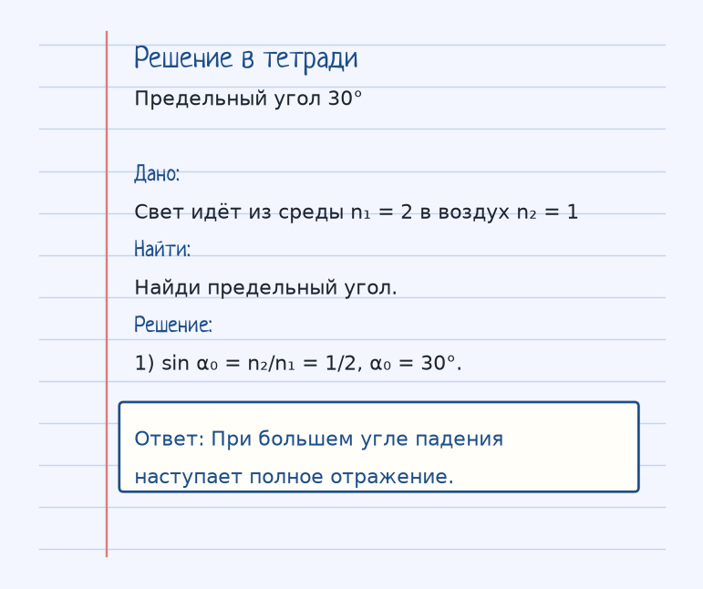
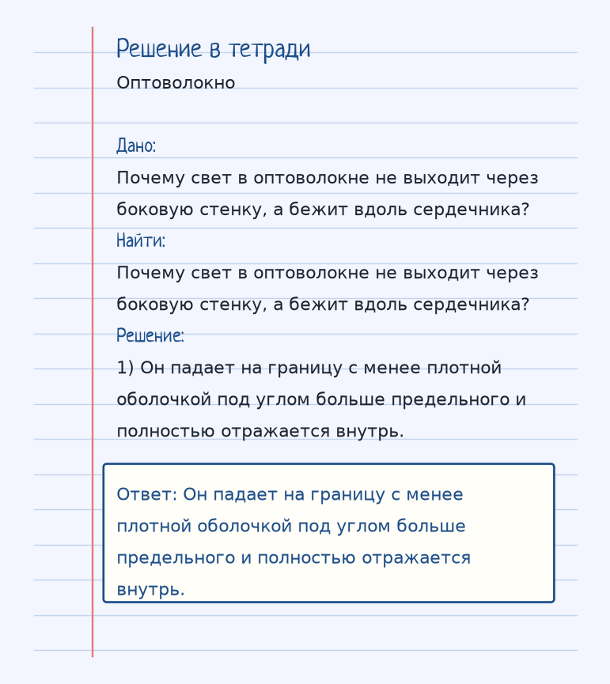

Тема «Полное внутреннее отражение»: физический смысл, единицы величин, типичные ошибки и два разобранных примера.
Схема к условию.
Физический смысл
Если свет идет из более плотной среды в менее плотную под очень большим углом, он не выходит наружу, а полностью отражается обратно. Это явление используется в оптоволокне.
Полное внутреннее отражение бывает только при ходе из более плотной среды в менее плотную, n₁ > n₂. Угол с нормалью должен быть больше предельного α₀, для которого sin α₀ = n₂/n₁. Тогда преломлённый луч не выходит, энергия целиком возвращается отражением.
Если n₁ = 2 и n₂ = 1, sin α₀ = 1/2, α₀ = 30°. Угол падения 40° уже больше предельного — будет полное отражение. Угол 20° меньше 30° — луч ещё выходит наружу, хотя и отходит от нормали.
Оптоволокно держит свет внутри сердечника именно так: сердцевина оптически плотнее оболочки, и лучи на границе отражаются обратно. Ныряльщик, смотрящий почти горизонтально вверх, видит не небо, а отражение подводного мира.
Формула и единицы
sin α₀ = n₂ / n₁ (где n₁ > n₂)
Если угол падения больше α₀, наступает полное отражение.
sin α₀ = n₂/n₁ при n₁ > n₂. Если угол падения больше α₀, свет полностью отражается.
Пояснение
Ныряльщик под водой смотрит вверх. Если смотреть почти горизонтально, он видит не небо, а отражение дна.
Ныряльщик смотрит вверх почти горизонтально и видит не небо, а отражение дна: угол больше предельного.
Типичные ошибки
Из воздуха в воду полного внутреннего отражения нет: это ход в более плотную среду. Нужен ход наружу, из плотной в редкую.
Разобранные примеры. Решение каждого открывается отдельно.
Разбор 1
Предельный угол 30°
Свет идёт из среды n₁ = 2 в воздух n₂ = 1. Найди предельный угол.
На схеме только условие.
Порядок записи: данные, единицы СИ, искомая величина, ход решения, ответ.
Дано. Свет идёт из среды n₁ = 2 в воздух n₂ = 1
В СИ.
Найти. Найди предельный угол.
Решение.
sin α₀ = n₂/n₁ = 1/2, α₀ = 30°.
При большем угле падения наступает полное отражение.

Разбор 2
Оптоволокно
Почему свет в оптоволокне не выходит через боковую стенку, а бежит вдоль сердечника?
На схеме только условие.
Порядок записи: данные, единицы СИ, искомая величина, ход решения, ответ.
Дано. Почему свет в оптоволокне не выходит через боковую стенку, а бежит вдоль сердечника?
В СИ.
Найти. Почему свет в оптоволокне не выходит через боковую стенку, а бежит вдоль сердечника?
Решение.
Он падает на границу с менее плотной оболочкой под углом больше предельного и полностью отражается внутрь.
Он падает на границу с менее плотной оболочкой под углом больше предельного и полностью отражается внутрь.

Разбор 3
Предельный угол
n₁ = 1,5, n₂ = 1. Найдите синус предельного угла.
На схеме только условие.
Порядок записи: данные, единицы СИ, искомая величина, ход решения, ответ.
Дано. Свет идёт из среды 1,5 в воздух
В СИ.
sin α₀ = n₂/n₁.
Найти. sin α₀
Решение.
sin α₀ = 1/1,5 = 2/3.
2/3.
Разбор 4
Условие
При каком ходе луча возможно полное внутреннее отражение?
На схеме только условие.
Порядок записи: данные, единицы СИ, искомая величина, ход решения, ответ.
Дано. Две среды
В СИ.
Из оптически более плотной в менее плотную и угол больше предельного.
Найти. Условие
Решение.
Из более плотной среды в менее плотную при угле падения больше предельного.
Из плотной в редкую при угле больше α₀.
Разбор 5
Меньше предельного
Угол падения из стекла в воздух меньше предельного. Что делает луч?
На схеме только условие.
Порядок записи: данные, единицы СИ, искомая величина, ход решения, ответ.
Дано. α < α₀
В СИ.
Ещё есть преломлённый луч.
Найти. Поведение
Решение.
Луч частично выходит, преломляясь.
Выходит в воздух, преломляясь.
Разбор 6
Волокно
Почему свет идёт вдоль оптоволокна, не выходя через боковую поверхность?
На схеме только условие.
Порядок записи: данные, единицы СИ, искомая величина, ход решения, ответ.
Дано. Сердечник оптически плотнее оболочки
В СИ.
Угол падения на границу больше предельного.
Найти. Явление
Решение.
На границе происходит полное внутреннее отражение.
Из-за полного внутреннего отражения.
Разбор 7
Из воздуха
Возможно ли полное внутреннее отражение при входе луча из воздуха в воду?
На схеме только условие.
Порядок записи: данные, единицы СИ, искомая величина, ход решения, ответ.